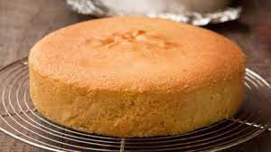

Cake

Description
Ingredients
- 3 cups all-purpose flour
- ¼ teaspoon baking soda
- ½ teaspoon salt
- 1 cup buttermilk
- 1 cup butter
- 3 cups white sugar
- 6 large eggs eggs
- 1 teaspoon vanilla extract
Steps
- Preheat oven to 325 degrees F (165 degrees C).
Grease one 9 or 10 inch tube pan. Mix together the flour, baking soda, and salt.
Set aside.
- In a large bowl, beat butter with sugar. Mix in the eggs, one at time, beating well after each addition.
Stir in the lemon and the vanilla extracts. Gently mix in flour mixture alternately with the buttermilk.
Pour batter into the prepared pan.
- Bake in preheated oven for 90 minutes. When cake begins to pull away from the side of the pan it is done.
Let cool in pan for 10 minutes, then turn out onto a wire rack and cool completely.
Back to top
Back to Main Page